Texts
Beginner
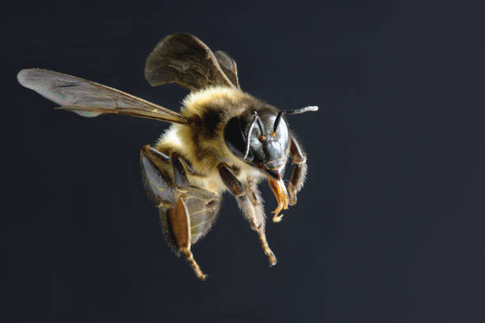
Bees
Bees know how to tell other bees where to find food.
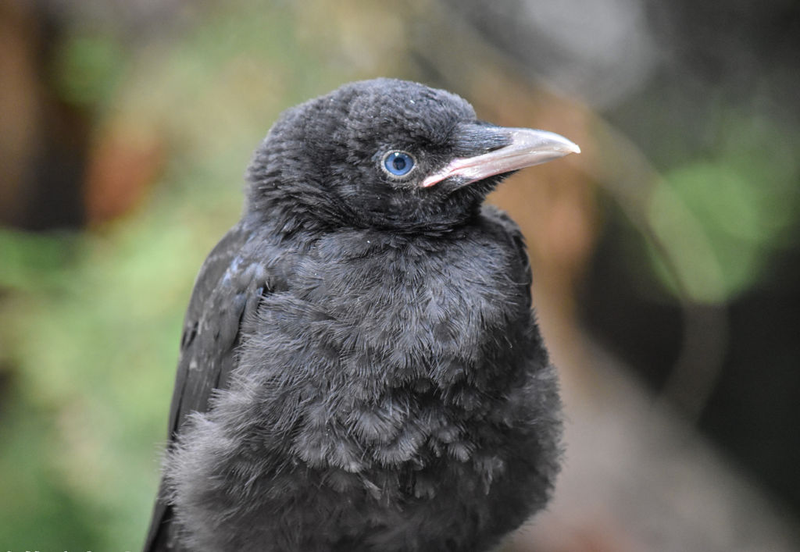
Crow
How I learned to understand what birds say to their children.
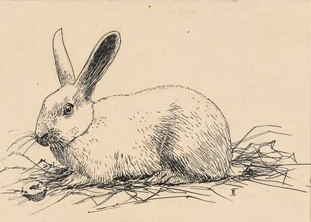
The Rabbit
How our dog found the neighbour's rabbit, and what happened next.
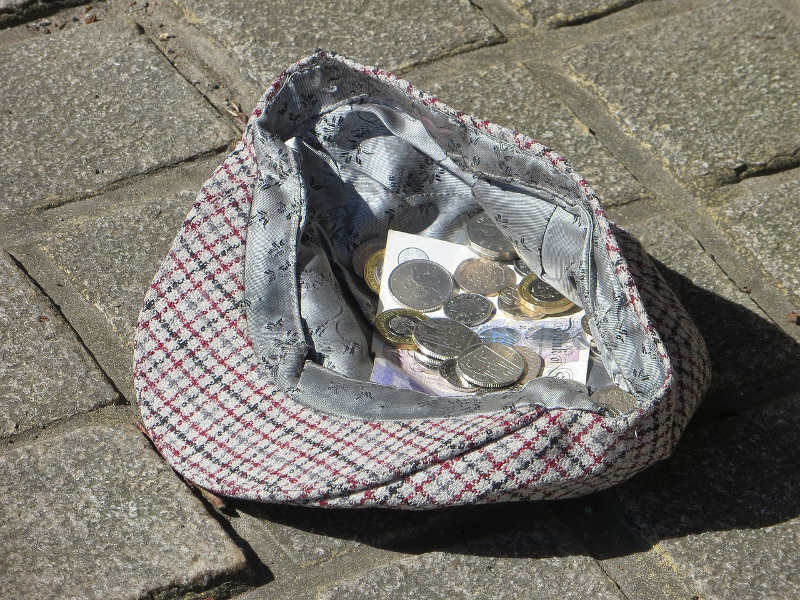
Mike
Mike learned that he has a special power: he can make people from different countries happy to be together.
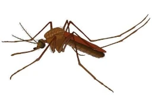
Mosquito
There are mosquitos which live underground.
Adopted
A young Russian girl goes to live with new parents in Finland.
Pre-Intermediate
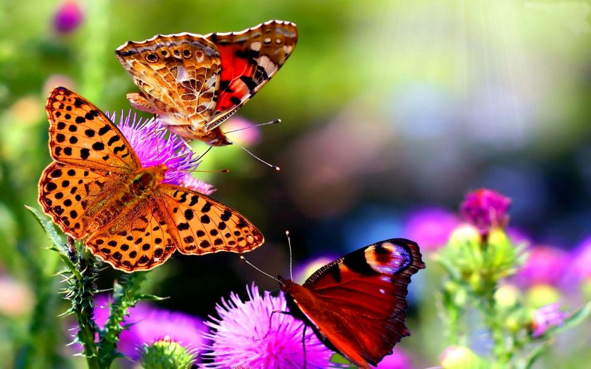
Butterflies and Caterpillars
Caterpillars eat to grow big, and then they create a cocoon and turn into a butterfly. How do they do this?
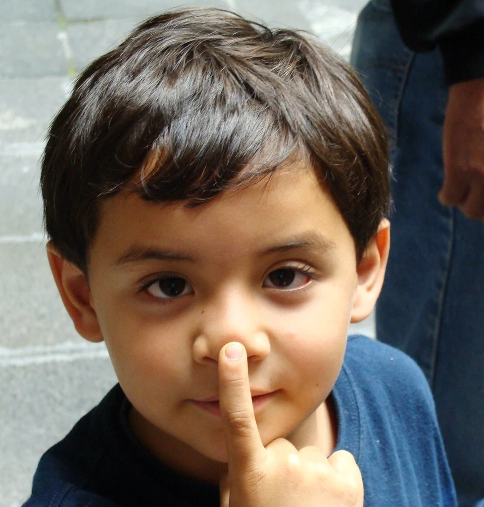
Faster than Thinking
You think you control your thoughts. But recent discoveries suggest that your brain makes decisions before you know about them.
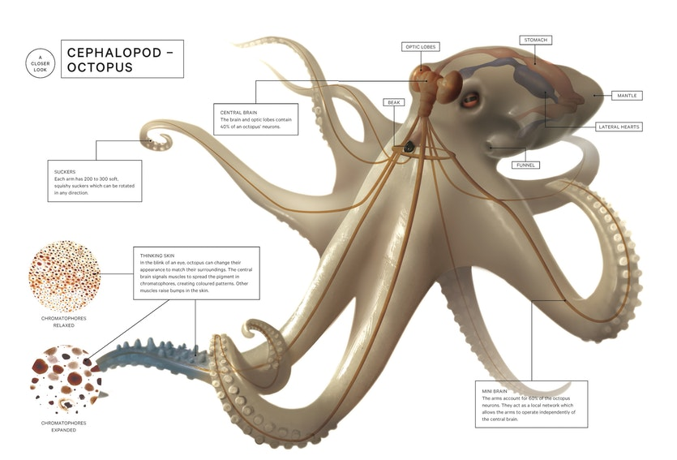
The Octopus's Eye
An octopus cannot see colour the way humans see colour, so how do they know how to change the colour of their skin in order to hide?
Intermediate
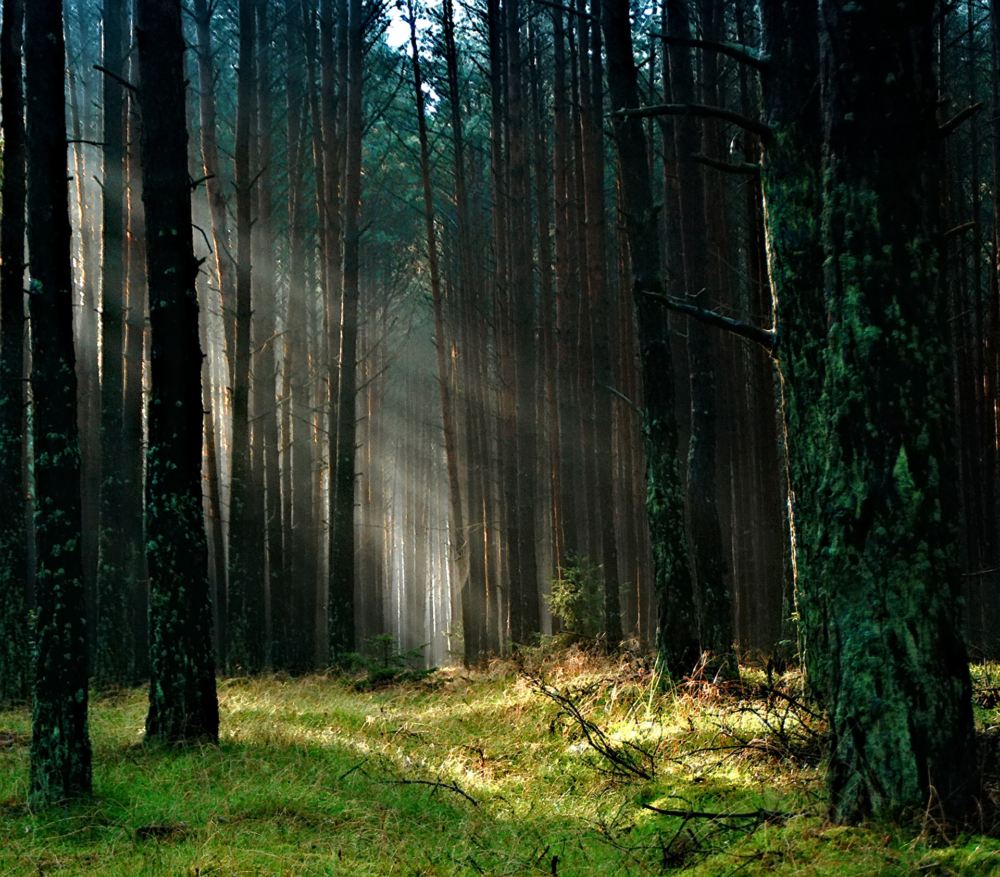
The Forest
Young Sarah likes to walk alone in the forest near her house, discovering the plants and animals that live there.
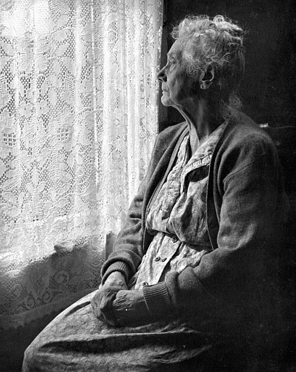
Jenny and the Vampire
Nine-year-old Jenny dares to visit an old woman in an old house at midnight.
The Bridge
Claire works in a flower shop, where she gets little recognition for her expertise and hard work. When she meets an author on a train, she starts to imagine an alternative life for herself.
Advanced
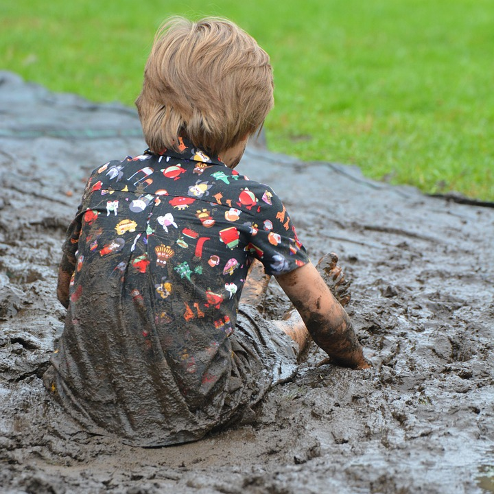
Childseye
Matthew is three years old. He has many questions about nature. The most important things to learn are often very hard to see.
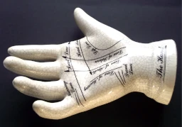
The Gift
An old clairvoyant works out a plan to ensure that his son will inherits his gift and a good fortune, regardless of how much he himself will lose.
 The Raccoon
The Raccoon
Toni is not afraid to take risks. He thinks that his courage will make him a leader. But when he meets a man who calls himself The Raccoon, Toni discovers that it is not enough to take risks. He must learn to forget his pride and calculate his best chances.
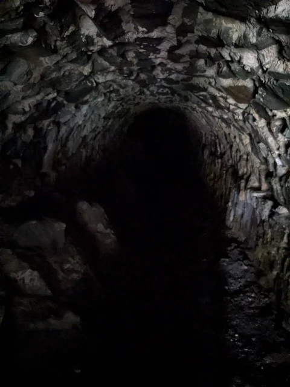
Grace
Grace is dreaming. Unable to wake her up, her mother takes her to the hospital. At the hospital, Grace's friend Lucy is about to have an operation that might save her life. And Grace's dream keeps growing darker.